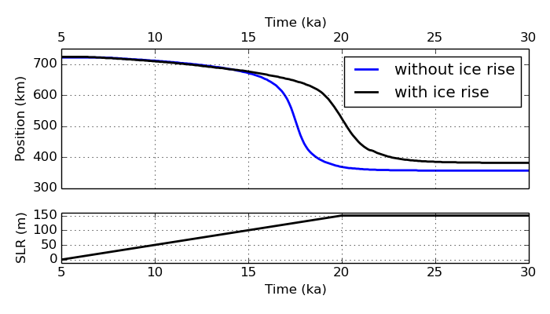

Lionel Favier @ Institut des Géosciences de l'Environnement (IGE)
Ice rise formation and evolution
Paper published in Geophysical Research Letters link1 link2Poster presented in the 2015 IGS in Cambridge link
With the ice-sheet model BISICLES, we simulated an ice rise through a deglaciation-like experiment. The simulation starts with an ice sheet in steady state (5 ka) that overrides a topographic high located close to the calving front. The sea level is then rised at a steady pace of 1 cm a year during 15 thousand years, and the simulation goes on until the ice sheet reaches steady state (30 ka).
The following movie shows the ice sheet retreat and the ice rise formation and evolution in between the two steady states. The movie starts after 5 thousands years of sea level rise (for before it is utterly boring...). The ice upper surface is colored as a function of the velocity magnitude. The ice lower surface is colored either in light gray for floating ice or dark gray for grounded ice. It is not easy to see, but the part below the ice rise is grounded...

This experiment was reproduced without the presence of the topographic high. Both grounding line retreat are compared in the plot below, along with the raise in sea level imposed to induce the retreat.
